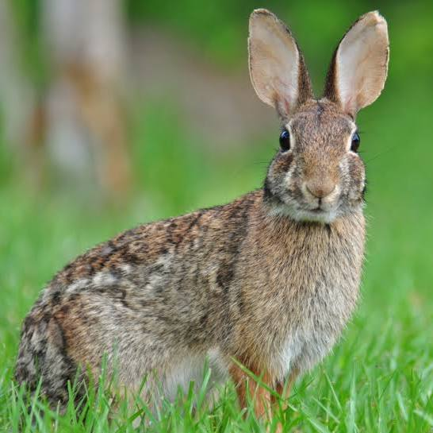
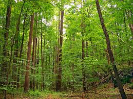

About Them
The Eastern Cottontail species of rabbit is one of the most popular and widespread in North America, known for their fluffy, white tails!
Focus on Biomes
The Eastern Cottontail is located in the deciduous or temperate forest. Key characteristics of that biome include: high levels of precipitation, humidity, and have a variety of deciduous trees. Due to these, conditions, the rabbit creates many adaptations over the course of their evolution including having good eyesight and hearing senses to stay on high alert for communication and warning. They also don't tend to go far away from their home as they are solitary and territorial creatures to nature.
Social Hierarchy Behavior
The Eastern Cottontail is generally quiet, except when they are mating and raising the young cottontails. That is when the older Eastern Cottontail make their social hierarchy. This leads to aggressiveness, chasing, and more rarely - fighting. Dominant displaces subordinates, meaning that there is a winner and a loser. The dominant males will do the most work and breeding, but won't care for them afterwards.